Portofolio Terpilih
Studi Kasus & Pembuktian Nyata.
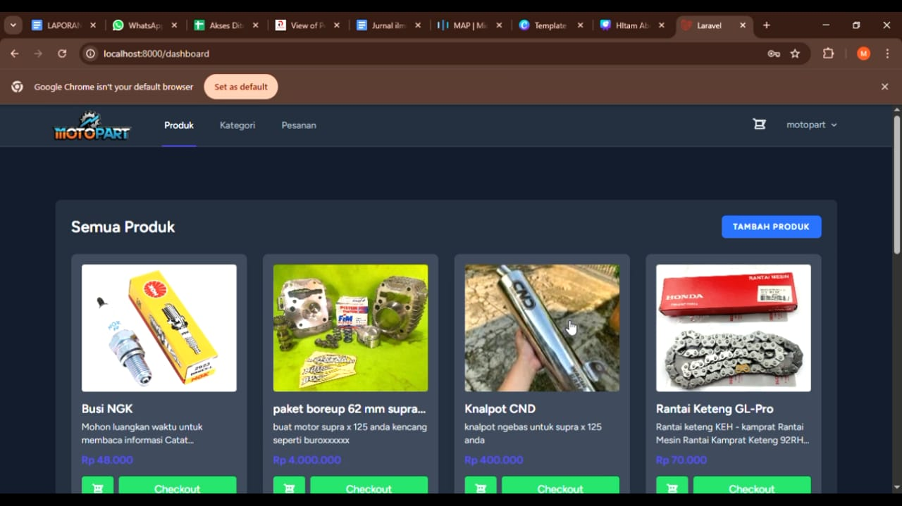
MotoPart – Spare Parts Marketplace
Membangun aplikasi marketplace suku cadang motor terintegrasi Filament Admin Panel untuk mempermudah kontrol inventaris produk.
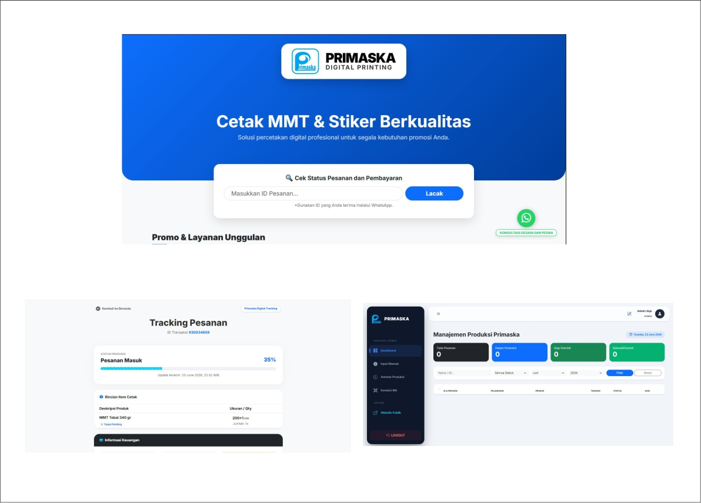
Primaska Printing ERP
Dirancang untuk meminimalkan human error, mempercepat rekap data harian, serta menyediakan fitur pelacakan pesanan secara real-time.

Catering Baluwarti — Order & Ledger
Mendigitalisasi alur pemesanan katering. Mengeliminasi tabrakan booking dan mempercepat rilis nota Kontrak resmi PDF dalam hitungan detik.
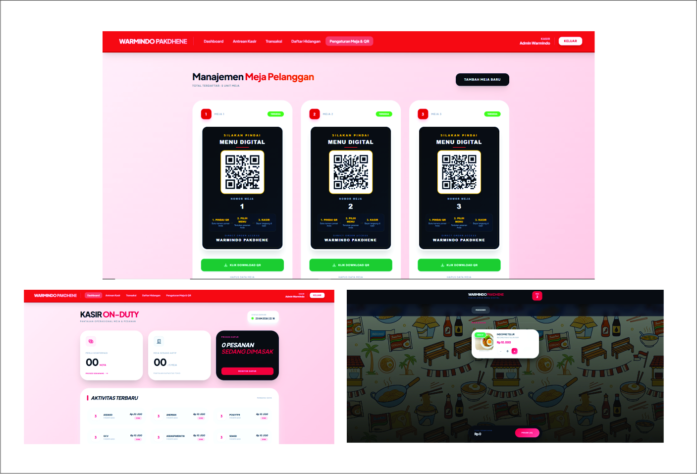
Warmindo Pakdhene QR Self-POS
Membangun POS mandiri berbasis QR meja ala restoran besar untuk mengurai antrean kasir dan menekan kesalahan pesanan dapur hingga 0%.
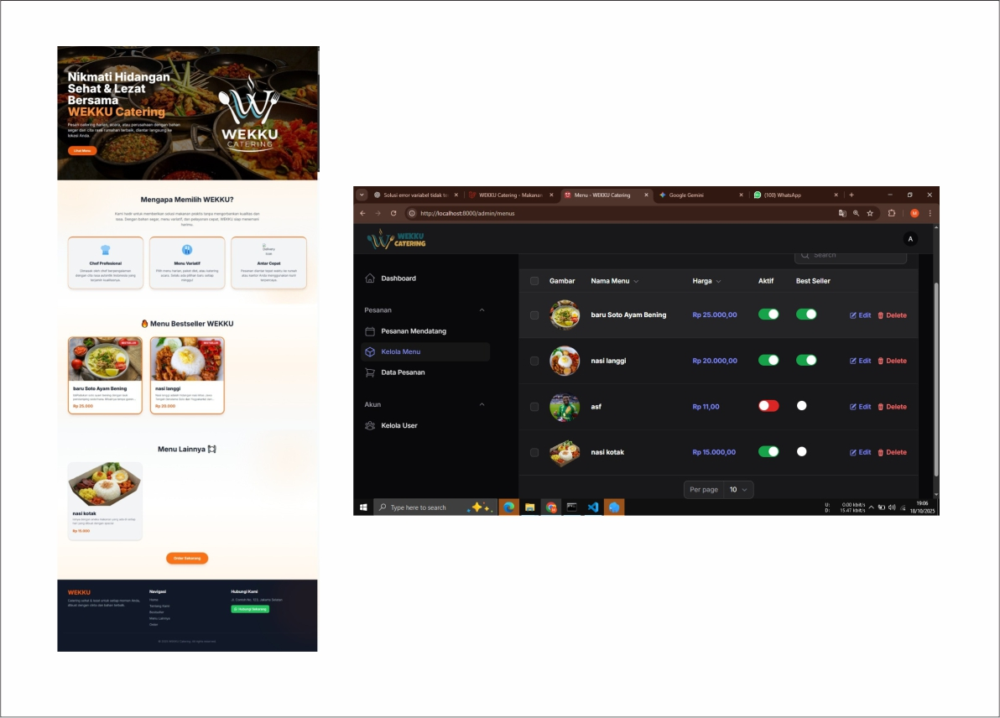
Wekku Catering — Dynamic E-Commerce
Membangun platform e-commerce katering terintegrasi. Memungkinkan kustomisasi paket menu prasmanan, manajemen slot kalender, dan kalkulasi biaya otomatis.
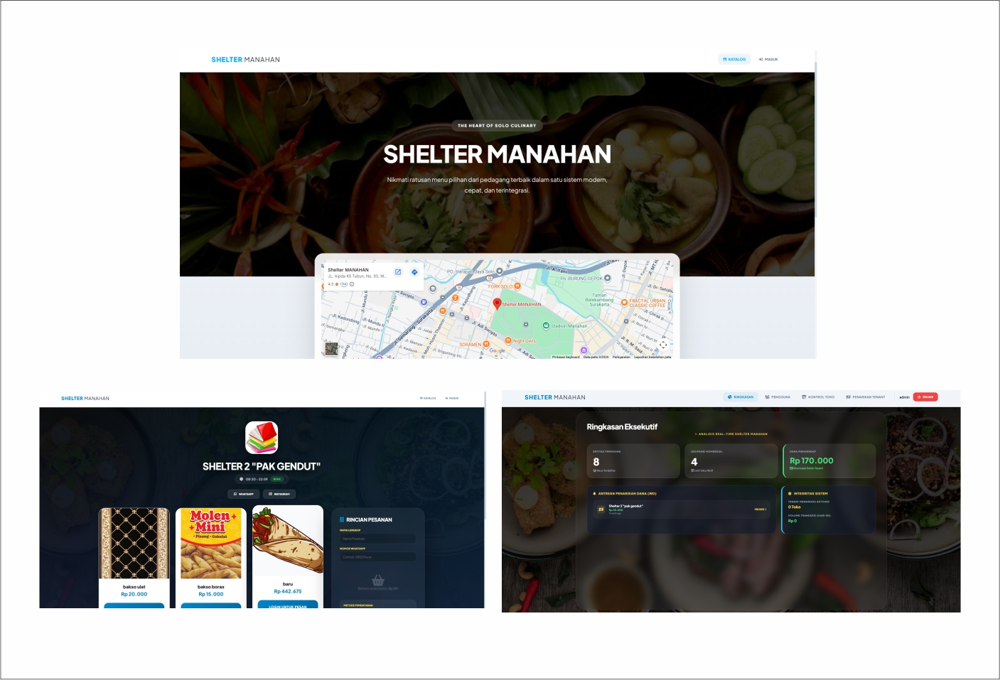
Shelter Manahan — Food Court E-Commerce
Membangun platform e-commerce dan sistem pre-order terpusat untuk tenant kuliner Shelter Manahan guna mempermudah rekapitulasi pesanan harian.
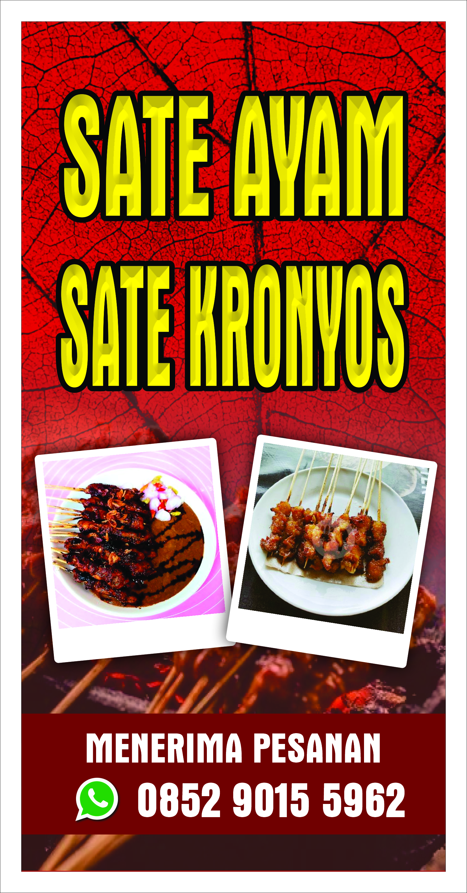
Sate Kronyos "Pemais" Banner
Merancang spanduk luar ruang dengan kontras warna tinggi agar legibilitas tulisan langsung tertangkap oleh mata pengendara motor.
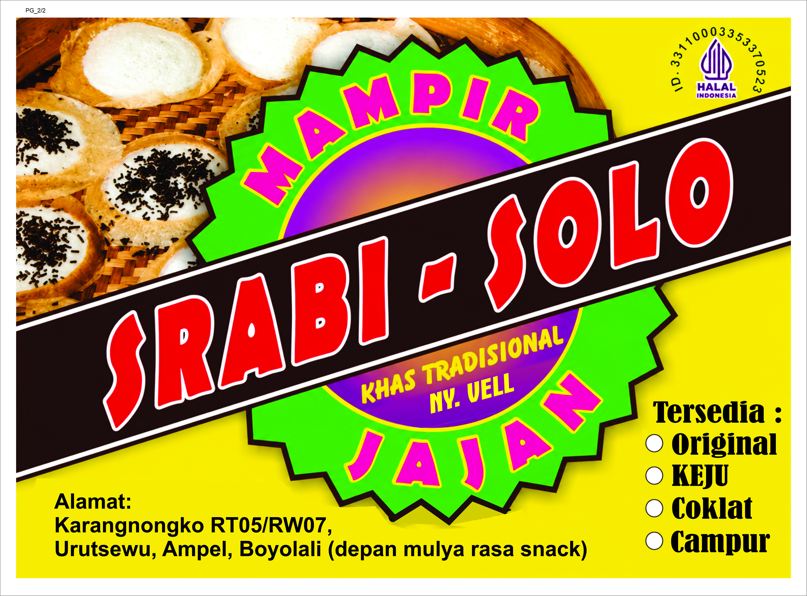
Srabi Solo Ny. Vell (Salatiga)
Re-desain identitas visual jajanan tradisional Solo di Salatiga dengan palet warna hangat guna memancarkan kesan legendaris.
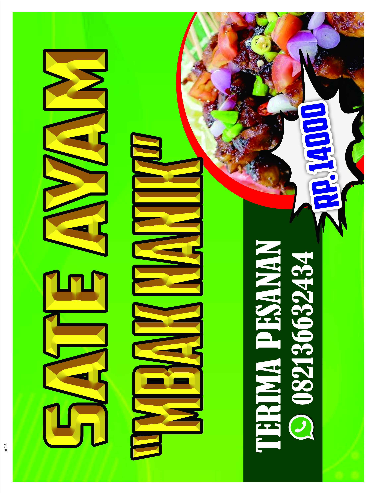
Sate Ayam Mbak Nanik
Pengaturan hierarki tipografi yang mengunci mata konsumen langsung pada angka Rp14.000 dan nomor kontak pemesanan.

Es Doger "Pelopor" Campaign
Manipulasi komposisi grafis splash susu dan es batu guna memberikan efek psikologis 'melepas dahaga' secara instan.
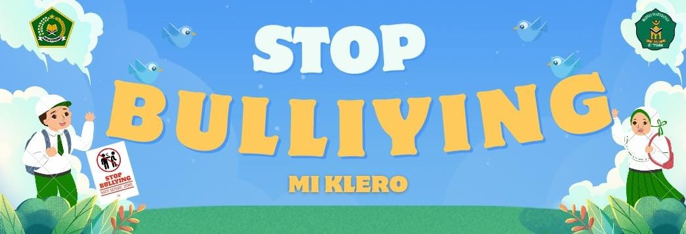
Stop Bullying — MI Klero
Merancang spanduk edukasi sekolah ramah anak dengan gaya ilustrasi hangat yang tegas menyampaikan pesan tanpa mengintimidasi.
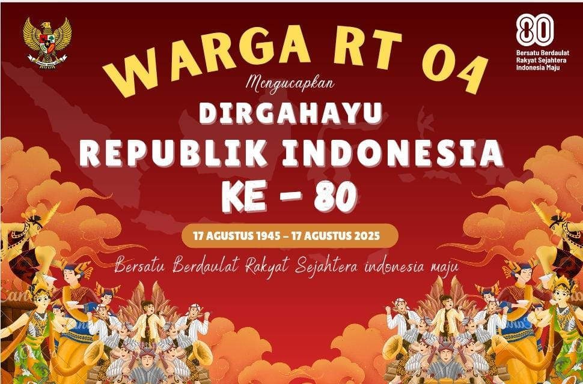
Dirgahayu RI Ke-80 (Warga RT 04)
Komposisi spanduk kemerdekaan format lebar dengan menyatukan berbagai ragam ilustrasi pakaian adat Nusantara.
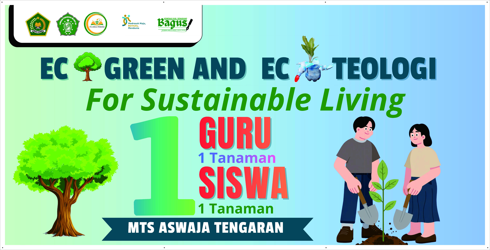
1 Guru 1 Tanaman (MTs Aswaja)
Poster aksi lingkungan hidup sekolah. Menyeimbangkan porsi ruang kosong (white-space) guna memancarkan rasa asri.